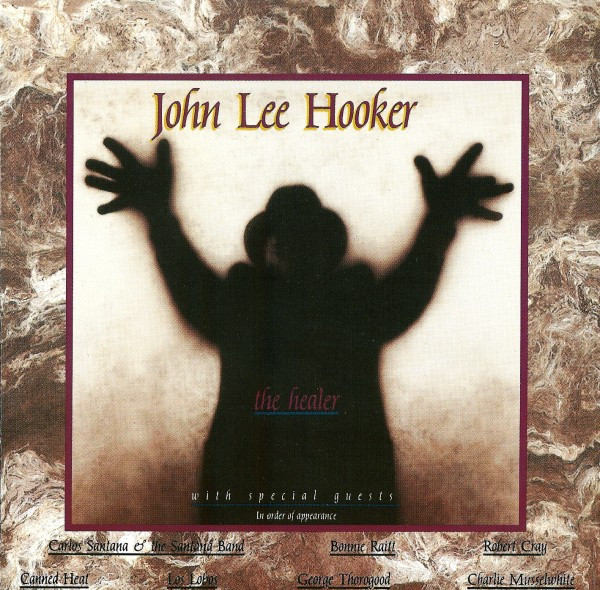

CD
The Healer
John Lee Hooker
Media: — · Sleeve: —
—
Personal
Discogs SuggestedCA$12.95
Discogs MedianCA$12.95
Discogs HighCA$12.95
- Physical Copy ID
- BB-CD-1460
- Year
- 1989
- Label
- Chameleon Records (2)
- Catalog #
- D2-74808
- Country
- CACanada
- Genre / Style
- Rock, Blues · Blues Rock, Delta Blues